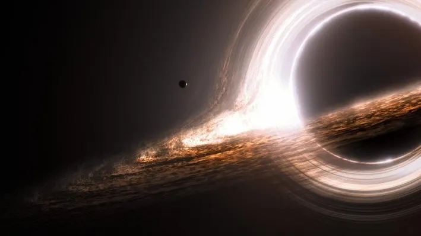
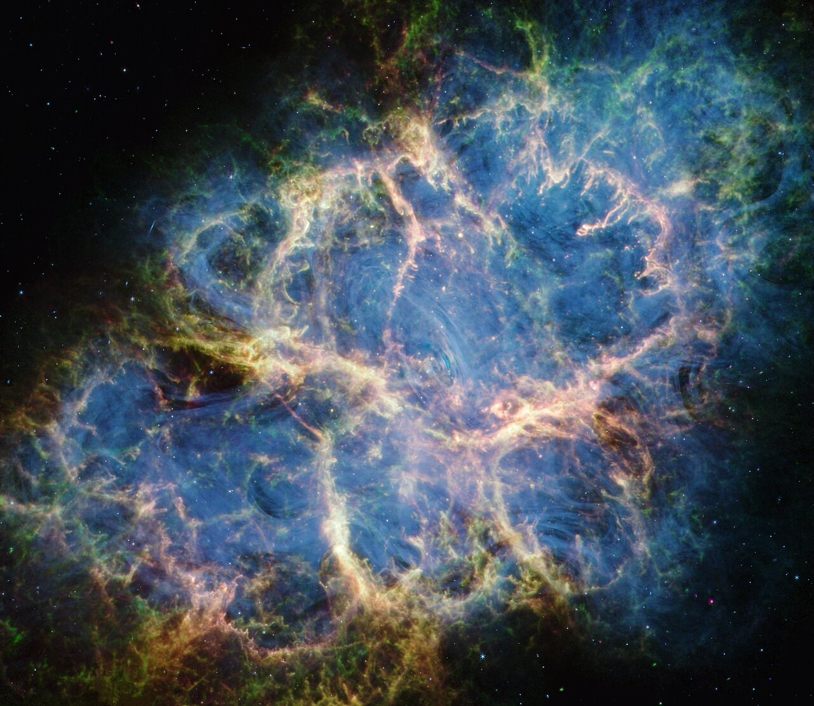
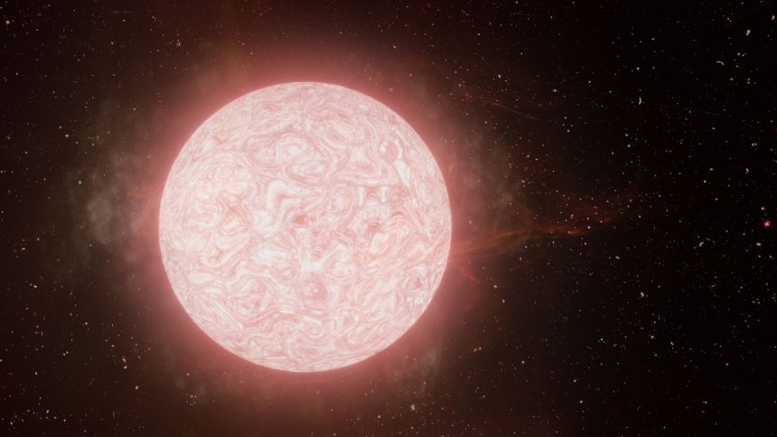
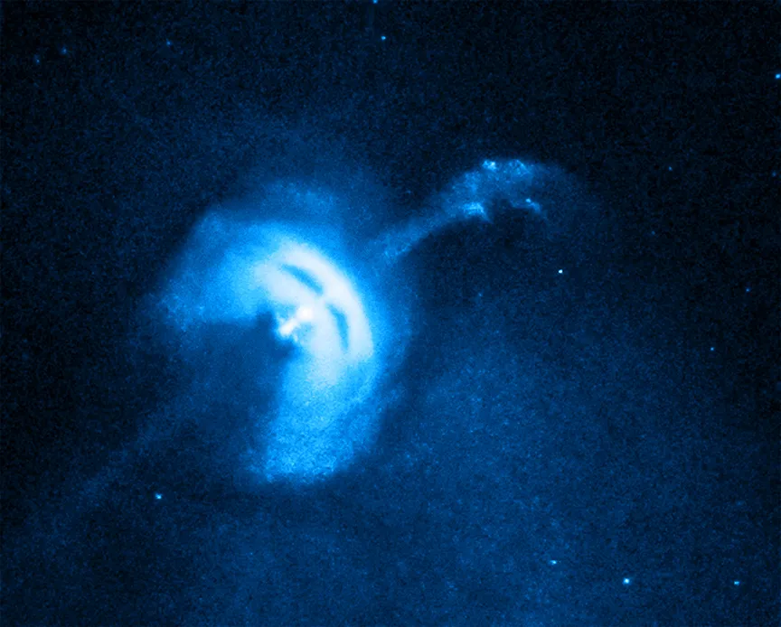
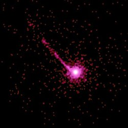

BLACK HOLE
Regions of spacetime where gravitational collapse reaches infinite density. Within the event horizon, escape velocity exceeds the speed of light, trapping matter and radiation forever while warping time around its accretion disk.

SUPERNOVA
The cataclysmic explosive death of a dying massive star. In seconds, a supernova unleashes as much raw energy as our Sun produces over 10 billion years, outshining host galaxies and scattering elements necessary for life.

SUPERGIANTS
Colossal stellar titans thousands of times the volume of our Sun. Burning through core fuel at blistering rates, giants like Betelgeuse and Antares swell into volatile behemoths destined for violent collapse.

NEUTRON STAR
The hyper-condensed stellar corpse left after a supernova. Packing twice the mass of the Sun into a sphere merely 20 km wide, atomic nuclei are crushed into pure neutron matter with magnetic fields trillions of times Earth's.

QUASAR
Extremely luminous galactic nuclei powered by supermassive black holes feeding on billions of solar masses of gas. Relativistic friction heats accretion disks past 100 million degrees, blasting twin plasma jets across space.